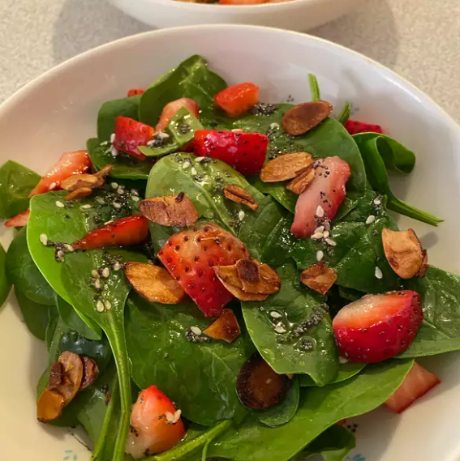

Gordon's Berry Breakfast Drink

Spinach and Strawberry Salad
Ingredients
- ¾ cup chilled orange juice
- ⅓ cup chilled pineapple juice/li>
- 2 cups vanilla yogurt/li>
- 1 cup frozen blueberries
- ½ cup frozen sliced strawberries
- ½ banana, sliced/li>
Steps
- Place the orange juice, pineapple juice, yogurt, blueberries, strawberries, and bananas into a blender. Cover and blend until smooth. The berry drink will be very thick. Serve immediately.
Back Home